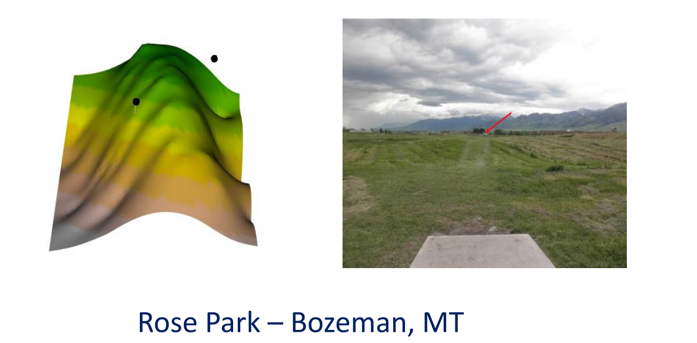
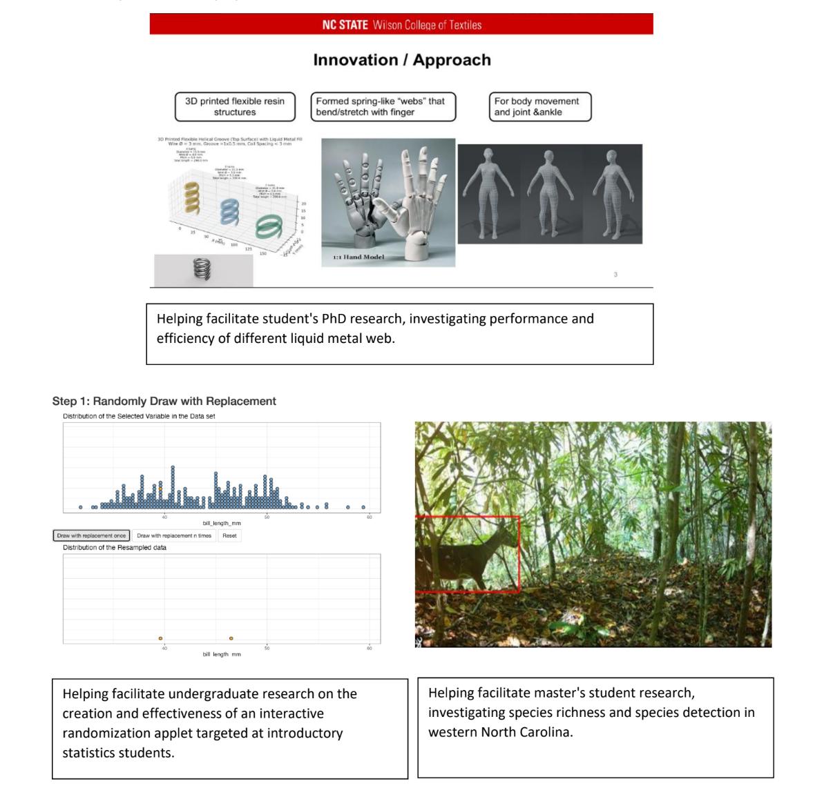
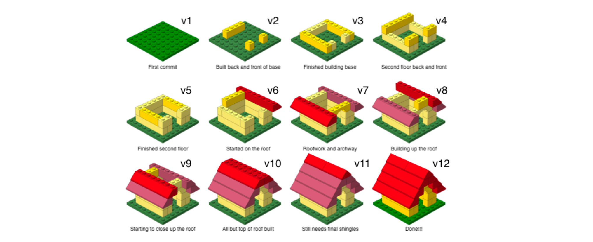
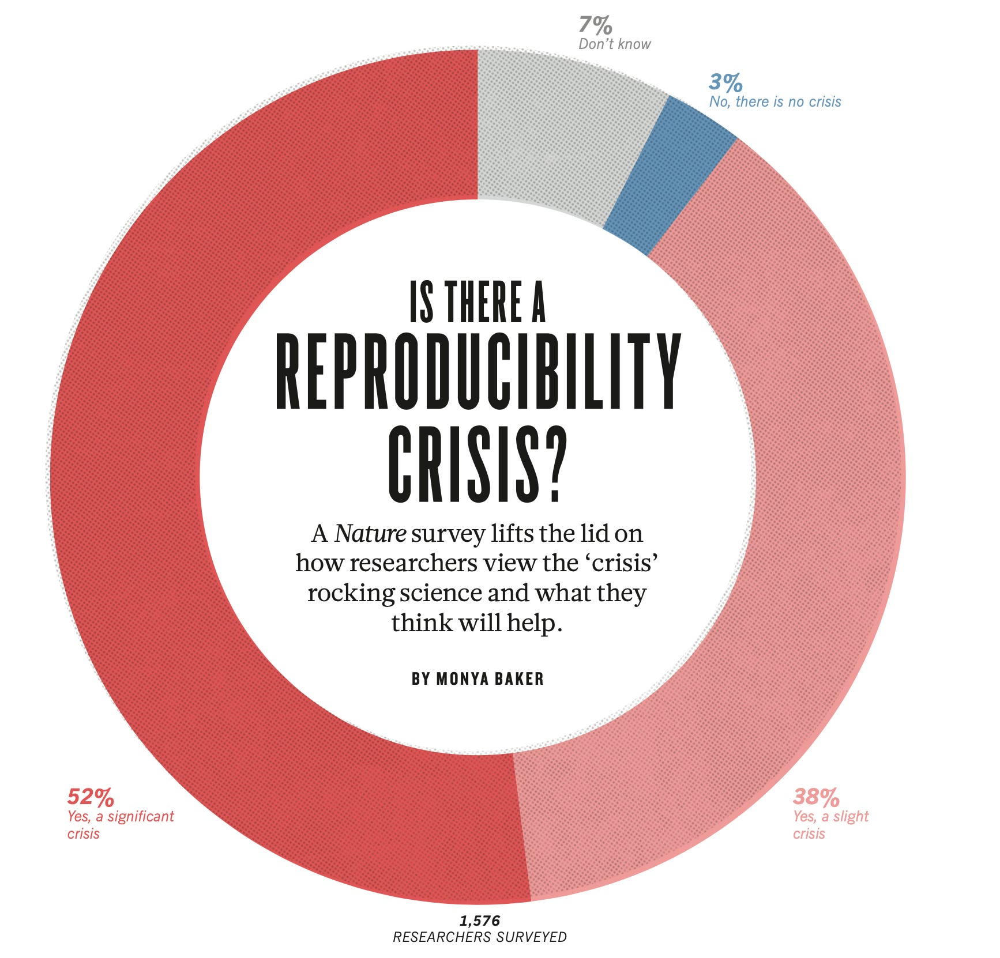
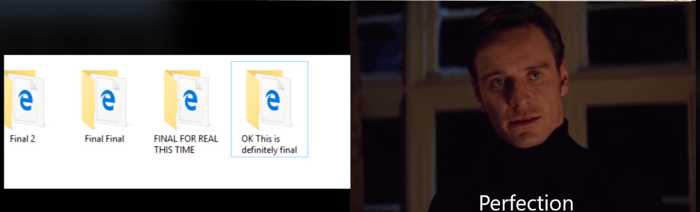
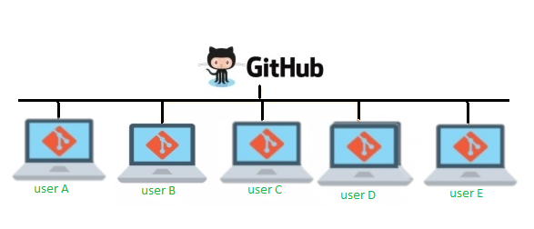
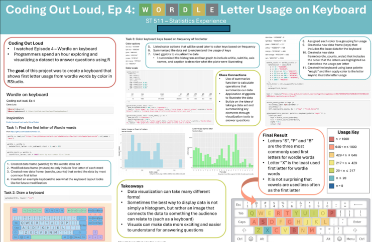
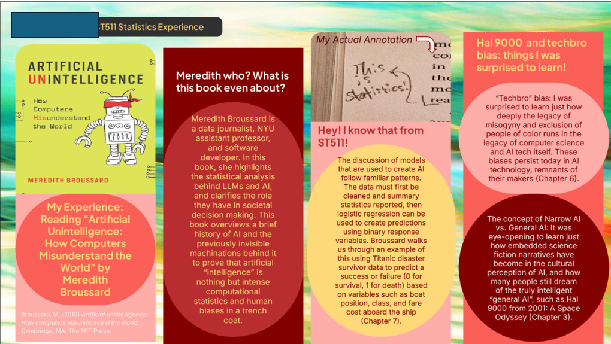

Welcome to ST115
Lecture 1
2026-08-18
Welcome
Goals for Day 1
Get organized + review
- Get to know the professor
- Get to know each other
- Course overview
- Coding/Tech conversations (what, why, how)
- Creating a GitHub account
Who Am I?

At NC State

At NC State
Project COMPASS (Community Partnership and Assessment for School Safety). This is a three-year, federally funded initiative focused on developing and piloting a data-driven framework to strengthen collaboration between schools and community partners.
NC State undergraduate curriculum committee.
Who Are You?
Please share with the class
- Name
- Major
- Year (Freshman, Sophomore, etc.)
- Why you are taking this course
- Anything else
How class runs
Build a community of learners
– Communication
– Respect
ST-115
– learn how to program: read, write, and explain the steps and purpose of code using R programs
– efficiently read in and manipulate data in R
– build effective data visualizations
– connect coding topics to concepts in ST-120
Question: Why?
Why code
In the world of big data…We can try and make meaning with it!
Why code
– Public Health & Disease Tracking
– Financial Risk Management
– Environmental Forecasting
– Legal and Policy Decision Making
– etc!
ST-115
– learn how to program: read, write, and explain the steps and purpose of code using R programs
– efficiently read in and manipulate data in R
– build effective data visualizations
– connect coding topics to concepts in ST-120
Question: AI can do this for us… why are we learning this?
AI in ST-115
There is nothing stopping you from using AI (such as ChatGPT) as an additional resource to help build up your mastery of the material. However, please use it responsibly.
– It is suggested that you use AI as a generator for additional practice problems
– A tool to help uncover a misunderstanding you may have with ST 115 content
AI in ST-115
Irresponsible uses of AI
– Having it think for you
– Only asking AI questions
Any work you turn in must be created by you! I’m interested in your fundamental understandings
AI in ST-115
Dialogues with AI Reduce Beliefs in Misinformation but Build No Lasting Discernment Skills
How AI is reshaping human skills and thinking
– I believe it’s disingenuous for people to tell you to jump into using AI
– I believe it’s disingenuous for people to tell you to never use AI
– I try to be as transparent as possible with all of my in-class decisions, so please do not hesitate to ask questions!
Questions
More Tech: Version Control
Create a GitHub account (Why?)
GitHub, Inc., is an Internet hosting service for software development and version control.
– remote collaboration
– project management
– keep track of changes to code / documents
GitHub

Why GitHub
– Why might this be useful for statisticians / data scientists?
Why GitHub
GitHub, Inc., is an Internet hosting service for software development and version control

What do students get out of using GitHub?
Besides saving the world….
– develop good habits as researchers
– emphasize the importance of reproducibility in science
– get experience using professional computing tools
Avoid this

Gain this

Questions
Course logistics
Where to get help
| Who | When | Where |
|---|---|---|
| Dr. Meyer | Monday: 2:00-3:00pm | Thursday: 1:30 - 2:30pm | SAS 5228 or Zoom |
| Nick Mann | Tuesday: 3:15 - 4:15pm | Friday 9:00 - 10:00am | SAS 1101 |
Videos
I will also post class videos for you to review (reminder: attendance is graded)
Grades
| Category | Percentage |
|---|---|
| Proficiency Test | 15% |
| Programming/Statistics Experience | 5% |
| Attendance | 7.5%% |
| GitHub Teamwork Assignment | 2.5% |
| Homework | 15% |
| Midterm-1 | 15% |
| Quizzes | 15% |
| Final Exam | 25% |
Proficiency Test
Timed programming assignments to demonstrate basic efficiency and master the first half of the course.
These will be completed during lab times. Please see our schedule for dates
Note: based on the pacing of the course, the scheduled dates may change
Programming/Statistics Experience
The goal of the programming/statistics experience assignments is to help you engage with the statistics, data science, and programming communities outside of the classroom!
Have an experience
Make connections between our class, and the experience
Make a slide (poster) summarizing your experience
Connections can be topics of regression, coding, working with data, etc.
Student Example

Student Example

Attendance
– 2.5% for showing up to class
– 2.5% for showing up to lab
– 2.5% for completion of lab assignments
GitHub Teamwork Assignment
In pairs, you will demonstrate an understanding of how to use GitHub as a collaborative tool. This will happen in the second half of the semester.
Homework
– Combination of handwritten assignments and coding assignments
– Turned in via Gradescope
Quizzes
– Combination of Moodle quizzes or short in-class quizzes. In-class quizzes will be announced in advance.
Midterm and Final exam
In-class assessment (no live coding) to demonstrate your mastery of the material
Questions
Moodle and our website
We will only use Moodle for…
– announcements
– quizzes
– gradebook
Your course material is organized on a website I have made for the course
Let’s tour both together
ToDos and reminders
ToDos
– Bring your laptop to class
– Bring your laptop to lab
– Complete the Getting to know you survey with a GitHub username
– Always feel like you can ask questions
Create a GitHub account
Go to https://github.com/, and create an account (unless you already have one).
Some tips from Happy Git with R.
– Incorporate your actual name!
– Reuse your username from other contexts if you can, e. g., Twitter or Slack.
– Pick a username you will be comfortable revealing to your future boss.
– Be as unique as possible in as few characters as possible. Shorter is better than longer.
– Avoid words with special meaning in programming (e.g. NA).